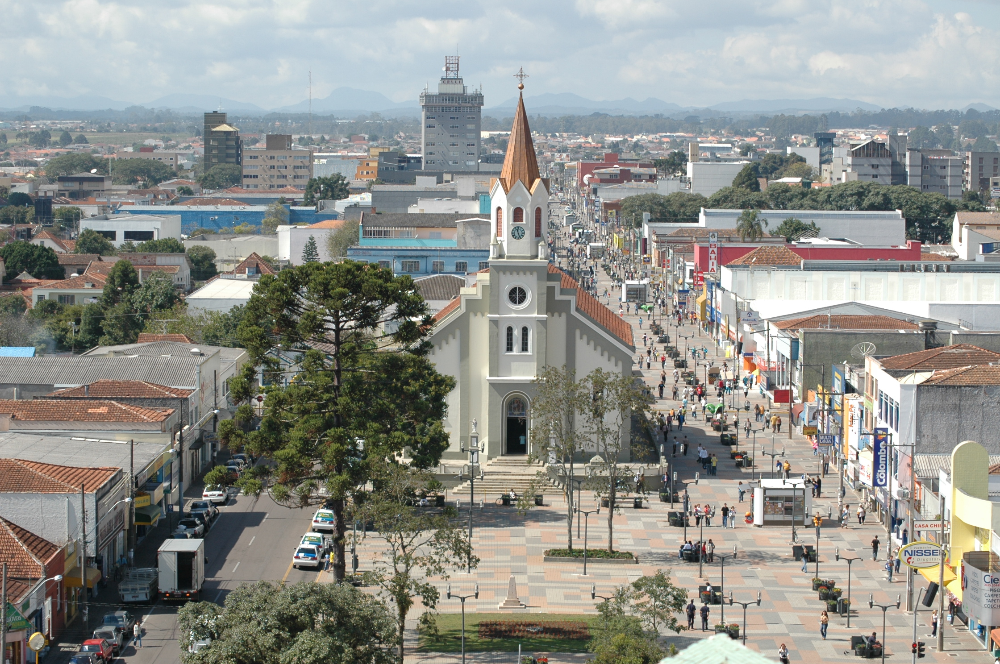

Imagem da fachada do Senac localizado em São José dos Pinhais - PR , Resolução 1500 x 744, tamanho do arquivo 530 KB

Imagem da fachada do Senac localizado em São José dos Pinhais - PR , Resolução 1500 x 744, tamanho do arquivo 244 KB
Imagem da fachada do Senac localizado em São José dos Pinhais - PR , Resolução 1500 x 744, tamanho do arquivo 135.8 KB

Imagem da fachada do Senac localizado em São José dos Pinhais - PR , Resolução 1500 x 744, tamanho do arquivo 102.6 KB

Imagem da area de construção do Senac localizado em São José dos Pinhais - PR , Resolução 800 x 600, tamanho do arquivo 263 KB

Imagem da Area de construção do senac localizado em São José dos Pinhais - PR , Resolução 800 x 600, tamanho do arquivo 87.5 KB

Imagem da Area de construção do senac localizado em São José dos Pinhais - PR , Resolução 800 x 600, tamanho do arquivo 60.7 KB

Imagem da aerea de construção do senac localizado em São José dos Pinhais - PR , Resolução 800 x 600, tamanho do arquivo 52.6 KB

Imagem da aerea da entrada do sesc localizado em São José dos Pinhais - PR , Resolução 1280 x 720, tamanho do arquivo 457.7 KB

Imagem da aerea da entrada do sesc localizado em São José dos Pinhais - PR , Resolução 1280 x 720, tamanho do arquivo 200.4 KB

Imagem da aerea da entrada do sesc localizado em São José dos Pinhais - PR , Resolução 1280 x 720, tamanho do arquivo 109 KB
Imagem da aerea da entrada do sesc localizado em São José dos Pinhais - PR , Resolução 1280 x 720, tamanho do arquivo 98.4 KB

Imagem da frente do senac localizado em São José dos Pinhais - PR , Resolução 275 x 183, tamanho do arquivo 23.2 KB

Imagem da frente do senac localizado em São José dos Pinhais - PR , Resolução 275 x 183, tamanho do arquivo 5.9 KB

Imagem da frente do senac localizado em São José dos Pinhais - PR , Resolução 275 x 183, tamanho do arquivo 4.5 KB

Imagem da frente do senac localizado em São José dos Pinhais - PR , Resolução 275 x 183, tamanho do arquivo 3.9 KB

Imagem do estica velho do senac localizado em São José dos Pinhais - PR , Resolução 1920 x 1080, tamanho do arquivo 866.5 KB

Imagem da fachada do senac localizado em São José dos Pinhais - PR , Resolução 1920 x 1080, tamanho do arquivo 338.3 KB

Imagem do estica velho do senac localizado em São José dos Pinhais - PR , Resolução 1920 x 1080, tamanho do arquivo 247.6 KB

Imagem do estica velho do senac localizado em São José dos Pinhais - PR , Resolução 1920 x 1080, tamanho do arquivo 192.7 KB